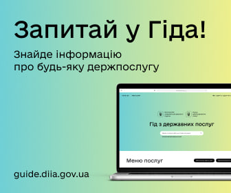
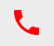
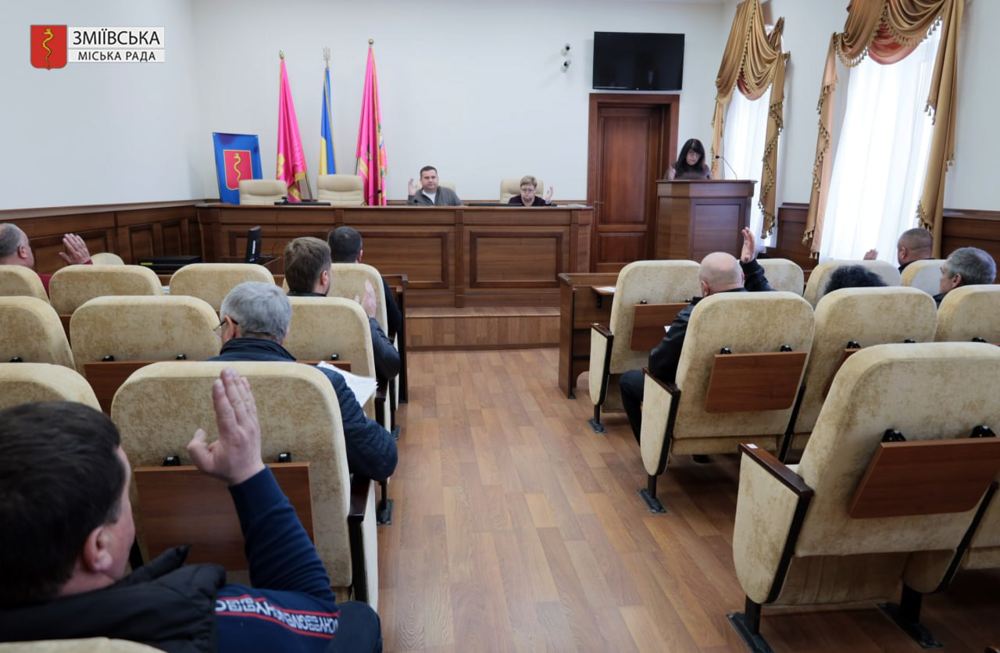

Вітаємо на офіційному сайті
Зміївської міської ради!

ЗМІЇВСЬКИЙ МІСЬКИЙ ГОЛОВА
Голодніков Павло Вікторович
вул. Адміністративна, 9, м. Зміїв Чугуївського р-ну Харківської обл., 63404

(05747) 34523ВИКОНКОМ ЗМІЇВСЬКОЇ МІСЬКОЇ РАДИ: КАДРОВІ ЗМІНИ, ЖИТЛОВІ РІШЕННЯ ТА МАТЕРІАЛЬНА ДОПОМОГА МЕШКАНЦЯМ

Детальніше...30 квітня під головуванням міського голови Павла Голоднікова відбулося чергове засідання виконавчого комітету Зміївської міської ради, під час якого розглянуто 13 питань порядку денного, що охоплюють ключові напрями життєдіяльності громади. Розглянуто кадрові та організаційні питання – внесено зміни до складу громадської комісії з житлових питань при виконавчому комітеті.
Значну увагу приділено житловим питанням. Прийнято рішення щодо взяття на квартирний облік дітей, позбавлених батьківського піклування, а також розглянуто питання зняття з обліку ветеранів, у зв'язку з отриманням державної допомоги та придбанням житла...